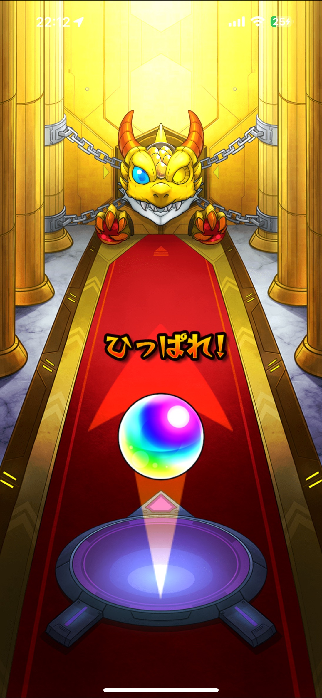

モンスト

実装された一年目から一応してます！けど少し飽きてきたんでログイン勢になってます！！多分課金額が一番多いアプリです！
実装された一年目から一応してます！けど少し飽きてきたんでログイン勢になってます！！多分課金額が一番多いアプリです！
実装日から一応してます！けど少し飽きてきたんでログイン勢になってます！！
プラスティック・メモリーズ
このアニメは何回見ても泣きます！がちです。歌もいいしこれは見るべきです！序盤にフィナーレがどうなるか予想つくのに泣くのはこのアニメだけやと思ってます
結構真面目に１か月に５回は行ってると思います！だいたいいつも２５ゲームくらいボウリングします！